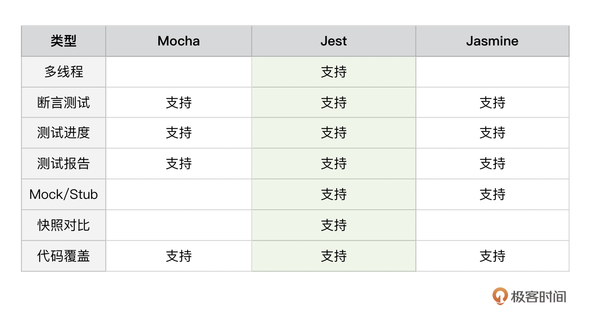

- 00 开篇词 JavaScript的进阶之路.md
- 01 函数式vs.面向对象：响应未知和不确定.md
- 02 如何通过闭包对象管理程序中状态的变化？.md
- 03 如何通过部分应用和柯里化让函数具象化？.md
- 04 如何通过组合、管道和reducer让函数抽象化？.md
- 05 map、reduce和monad如何围绕值进行操作？.md
- 06 如何通过模块化、异步和观察做到动态加载？.md
- 07 深入理解对象的私有和静态属性.md
- 08 深入理解继承、Delegation和组合.md
- 09 面向对象：通过词法作用域和调用点理解this绑定.md
- 10 JS有哪8种数据类型，你需要注意什么？.md
- 11 通过JS引擎的堆栈了解闭包原理.md
- 12 JS语义分析该用迭代还是递归？.md
- 13 JS引擎如何实现数组的稳定排序？.md
- 14 通过SparkPlug深入了解调用栈.md
- 15 如何通过哈希查找JS对象内存地址？.md
- 16 为什么环形队列适合做Node数据流缓存？.md
- 17 如何通过链表做LRU_LFU缓存？.md
- 18 TurboFan如何用图做JS编译优化？.md
- 19 通过树和图看如何在无序中找到路径和秩序.md
- 20 算法思想：JS中分治、贪心、回溯和动态规划.md
- 21 创建型：为什么说Redux可以替代单例状态管理.md
- 22 结构型：Vue.js如何通过代理实现响应式编程.md
- 23 结构型：通过jQuery看结构型模式.md
- 24 行为型：通过观察者、迭代器模式看JS异步回调.md
- 25 行为型：模版、策略和状态模式有什么区别？.md
- 26 特殊型：前端有哪些处理加载和渲染的特殊“模式”？.md
- 27 性能：如何理解JavaScript中的并行、并发？（上）.md
- 28 性能：如何理解JavaScript中的并行、并发？（下）.md
- 29 性能：通过Orinoco、Jank Busters看垃圾回收.md
- 30 网络：从HTTP_1到HTTP_3，你都需要了解什么？.md
- 31 安全：JS代码和程序都需要注意哪些安全问题？.md
- 32 测试（一）：开发到重构中的测试.md
- 33 测试（二）：功能性测试.md
- 34 测试（三）：非功能性测试.md
- 35 静态类型检查：ESLint语法规则和代码风格的检查.md
- 36 Flow：通过Flow类看JS的类型检查.md
- 37 包管理和分发：通过NPM做包的管理和分发.md
- 38 编译和打包：通过Webpack、Babel做编译和打包.md
- 39 语法扩展：通过JSX来做语法扩展.md
- 40 Polyfill：通过Polyfill让浏览器提供原生支持.md
- 41 微前端：从MVC贫血模式到DDD充血模式.md
- 42 大前端：通过一云多端搭建跨PC_移动的平台应用.md
- 43 元编程：通过Proxies和Reflect赋能元编程.md
- 结束语 JavaScript的未来之路：源于一个以终为始的初心.md
33 测试（二）：功能性测试
你好，我是石川。
在上一讲中，我们通过红绿重构循环对抽象的测试驱动开发（TDD）做了具象化的理解。今天，我们将进一步通过具体的单元测试来掌握这种开发模式的实施。
测试工具对比
目前，市面上已经有很多围绕JavaScript产生的第三方测试工具，所以在这里，我们不需要重复造轮子，通过已有的测试框架来帮助我们进行测试就可以了。首先我们可以对比下几个比较流行的框架：Mocha、Jest和Jasmine。
这三个工具都基于断言函数（assertion functions）来帮助我们增加测试的可读性和可扩展性，也都支持我们了解测试进度和生成最终的测试结果报告，了解代码的覆盖率。除此之外，Jest更能支持Mock/Stub的测试，同时也可以生成快照来对比前后的测试结果，它也支持多线程。

最小化的单元测试
我们可以看一个简单的例子。首先我们要安装Jest，这要基于Node和NPM，你可以在Terminal通过运行下面的命令来看是否已经安装了Node和NPM。如果返回的是相关的版本信息，那么证明这两个工具已经存在了。
node -v
npm -v
下一步，我们需要再安装Jest，在Terminal，我们可以通过下面这行命令安装Jest。global的flag可以允许我们从命令行的客户端如 Terminal 或 Command Prompt 直接运行Jest测试。
npm install jest --global
下面，假设我们想要写一个斐波那契数列函数，按照测试驱动的思想，我们先来创建一个fib.test.js的测试文件，里面包含如下的测试用例：如果我们输入7，斐波那契数列结果应该是13。
test('7的斐波那契结果是13', () => {
expect(fib(7, 0, 1)).toBe(13);
});
通过下面的指令，我们可以运行上面的测试脚本：
jest fib.test.js
这时，我们如果运行上述的测试，结果肯定是报错。因为在这个时候，我们还没创建斐波那契数列的函数！所以这一步就是我们红绿重构中的红色部分。
这时，我们知道为了通过测试，下一步需要创建一个斐波那契的函数。我们可以通过如下的方式创建一个并且保存在fib.js里。在这个文件的尾部，我们做了模块化的导出，为的是让我们能够在刚才创建的测试文件中做导入和引用。
function fib(n, lastlast, last){
if (n == 0) {
return lastlast;
}
if (n == 1) {
return last;
}
return fib(n-1, last, lastlast + last);
}
module.exports = fib;
之后，我们可以在前面的用例中导入斐波那契函数。
var fib = require('./fib');
test('7的斐波那契结果是13', () => {
expect(fib(7, 0, 1)).toBe(13);
});
当我们再次通过之前的指令运行上面的文件时，就可以看到通过的结果。也就是到了红绿重构中的绿色。因为这是一个相对较为简单的测试，我们不需要重构，所以当执行到这里时，我们就可以当做测试完成了。
数据值类型的匹配
在数据类型的一讲中，我们讲过了JavaScript赋值中的一些常见的坑，比如值的比较和严格比较所返回的结果是不同的，以及除了布尔值之外，可能会返回否值的数据类型。所以在测试的时候，我们也应该注意我们期待的结果和实际结果是不是匹配的。Jest就自带了很多的内置方法来帮助我们做数据类型的匹配。
下面我们可以通过两个例子来看看。在第一个例子中，我们可以看到当我们使用toEqual来做比较的时候，undefined就被忽略了，所以测试可以通过，但当我们使用toStrictEqual的时候，则可以看到严格比较的结果，测试的结果就是失败。在第二个例子中，我们可以看到因为数字的值可以是NaN，它是falsy的值，所以测试的结果是通过。
// 例子1
test('check equal', () => {
var obj = { a: undefined, b: 2 }
expect(obj).toEqual({b: 2});
});
test('check strict equal', () => {
var obj = { a: undefined, b: 2 }
expect(obj).toStrictEqual({b: 2});
});
//例子2
test('check falsy', () => {
var num = NaN;
expect(num).toBeFalsy();
});
我们在前面一个小节斐波那契的例子中用到的 toBe()，是代表比较还是严格比较的结果呢？实际上都不是，toBe() 用的是 Object.is。除了toBeFasly，其它的测试真值的方法还有toBeNull()、toBeUndefined()、toBeDefined()、toBeTruthy()。同样，在使用的时候，一定要注意它们的实际意义。
除了严格比较和否值外，另外一个也是我们在数据类型讲到的问题，就是数字中的浮点数丢精问题。针对这个问题，我们也可以看到当我们用 0.1 加 0.2 的时候，我们知道它不是等于 0.3，而是等于 0.30000000000000004（\(0.3+4\\times10^{-17}\)）。所以 expect(0.1+0.2).toBe(0.3) 的结果是失败的，而如果我们使用toBeCloseTo()的话，则可以看到接近的结果是可以通过测试的。
除了对比接近的数字外，Jest还有toBeGreaterThan()、toBeGreaterThanOrEqual()，toBeLessThan()和toBeLessThanOrEqual()等帮助我们对比大于、大于等于、小于、小于等于的方法，便于我们对数值进行比较。
test('浮点数相加', () => {
var value = 0.1 + 0.2;
expect(value).toBe(0.3); // 失败
});
test('浮点数相加', () => {
var value = 0.1 + 0.2;
expect(value).toBeCloseTo(0.3); // 通过
});
说完了数字，我们再来看看字符串和数组。在下面的两个例子中，我们可以通过toMatch()用正则表达式在字符串中测试一个词是否存在。类似的，我们可以通过toContain()来看一个元素是否在一个数组当中。
test('单词里有love', () => {
expect('I love animals').toMatch(/love/);
});
test('单词里没有hate', () => {
expect('I love peace and no war').not.toMatch(/hate/);
});
var nameList = ['Lucy', 'Jessie'];
test('Jessie是否在名单里', () => {
expect(nameList).toContain('Jessie');
});
嵌套结构的测试
下面，我们再来看看嵌套结构的测试。我们可以把一组测试通过 describe 嵌套在一起。比如我们有一个长方形的类，测试过程可以通过如下的方式嵌套。外面一层，我们描述的是长方形的类；中间一层是长方形面积的计算；内层测试包含了长和宽的设置。除了嵌套结构，我们也可以通过 beforeEach 和 afterEach 来设置在每组测试前后的前置和后置工作。
describe('Rectangle class', ()=> {
describe('area is calculated when', ()=> {
test('sets the width', ()=> { ... });
test('sets the height', ()=> { ... });
});
});
响应式异步测试
我们说前端的测试很多是事件驱动的，之前我们在讲异步编程的时候，也说到前端开发离不开异步事件。那么通常测试工具也会对异步调用的测试有相关的支持。还是以Jest为例，就支持了callback、promise/then和我们说过的async/await。下面，就让我们针对每一种模式具体来看看。
首先，我们先来看看callback。如果我们单纯用callback，会有一个问题，那就是当异步刚刚返回结果，还没等callback的执行，测试就执行了。为了避免这种情况的发生，可以用一个done的函数参数，只有当 done() 的回调执行了之后，才会开始测试。
test('数据是：价格为21', done => {
function callback(error, data) {
if (error) {
done(error);
return;
}
try {
expect(data).toBe({price：21});
done();
} catch (error) {
done(error);
}
}
fetchData(callback);
});
下面，我们再来看看promise/then以及async/await的使用。同样如我们在异步时提到过的，实际上，async/await也是promise/then基语法糖的实现。我们也可以将await与resolve和reject结合起来使用。在下面的例子中，我们可以看到当获取数据后，我们可以通过对比期待的值来得到测试的结果。
// 例子1：promise then
test('数据是：价格为21', () => {
return fetchData().then(data => {
expect(data).toBe({price：21});
});
});
// 例子2：async await
test('数据是：价格为21', async () => {
var data = await fetchData();
expect(data).toBe({price：21});
});
Mock和Stub测试
最后，我们再来看看 Mock 和 Stub，但是它俩有啥区别呢？
其实，Mock 和 Stub 都是采用替换的方式来实现被测试的函数中的依赖关系。它们的区别是 Stub 是手动替代实现的接口，而 Mock 采用的则是函数替代的方式。Mock可以帮助我们模拟带返回值的功能，比如下面的myMock，可以在一系列的调用中，模拟返回结果。
var myMock = jest.fn();
console.log(myMock()); // 返回 undefined
myMock.mockReturnValueOnce(10).mockReturnValueOnce('x').mockReturnValue(true);
console.log(myMock(), myMock(), myMock(), myMock()); // 返回 10, 'x', true, true
在这里，Jest使用了我们前面在函数式编程中讲过的连续传递样式（CPS），这样做的好处是可以帮助我们尽量避免使用Stub。Stub的实现会有很多手动的工作，而且因为它并不是最终的真实接口，所以手工实现真实接口的复杂逻辑不仅不能保证和实际接口的一致性，还会造成很多额外的开发成本。而使用基于CPS的Mock，可以取代Stub，并且节省模拟过程中的工作量。
var filterTestFn = jest.fn();
// 首次返回 `true` ；之后返回 `false`
filterTestFn.mockReturnValueOnce(true).mockReturnValueOnce(false);
var result = [11, 12].filter(num => filterTestFn(num));
console.log(result); // 返回 [11]
console.log(filterTestFn.mock.calls[0][0]); // 返回 11
console.log(filterTestFn.mock.calls[1][0]); // 返回 12
延伸：UI自动化测试
在上面的例子中，我们看到的是单元测试。但是，我们只要在前端的使用场景中，几乎离不开UI测试。之前，如果我们想测试UI方面的功能反应，要通过手动的方式点击屏幕上的元素，得到相关的反馈。但是对于开发人员来说，有没有什么自动化的方式呢？
这就要说到无头浏览器和自动化测试了。无头浏览器（headless browser）指的是不需要显示器的浏览器，它可以帮助我们做前端的自动化测试。
例如Google就开发了Puppeteer，一个基于Node.js的自动化测试工具，它提供了通过开发者工具协议来控制Chrome的API接口。Puppeteer在默认情况下以无头模式运行，但可以配置为在有头下运行的模式。Puppeteer也可以通过预置或手工配置的方式和Jest结合使用。如果选择预置方式的话，相关的第三方库也可以通过NPM来安装。
npm install --save-dev jest-puppeteer
安装后，可以在Jest的预置配置中加入 "preset": "jest-puppeteer"。
{
"preset": "jest-puppeteer"
}
下面，我们以“极客时间”为例，如果要测试极客时间的标题是否显示正确，我们可以通过如下的测试来实现。这个过程中，我们没有用到显示器，但是程序可以自动访问极客时间的首页，并且检查页面的标题是否和期待的结果一致。
describe('极客时间', () => {
beforeAll(async () => {
await page.goto('https://time.geekbang.org/');
});
it('标题应该是 "极客时间-轻松学习，高效学习-极客邦"', async () => {
await expect(page.title()).resolves.toMatch('Google');
});
});
总结
通过今天这节课，我们看到了在单元测试中如何实现前一讲中提到的红绿重构。同时，我们也看到了测试的结果是要和断言作对比的，因此在比较不同数据类型返回值的过程中，要特别注意避坑。
之后，我们看到了在嵌套结构的测试中，如何将相关的测试组合在一起，以及设置相关的前置和后置功能。并且在基于事件驱动的设计变得越来越重要的今天，我们如何在测试中处理异步的响应，在真实的接口和逻辑尚未实现的情况下如何通过Mock来模拟接口的反馈，以及通过CPS来尽量避免Stub的复杂逻辑实现和与真实接口不一致的问题。
思考题
今天我们提到了，Jest对比其它工具有着对快照和多线程的支持，你能想到它们的使用场景和实现方式吗？
欢迎在留言区分享你的答案、交流学习心得或者提出问题，如果觉得有收获，也欢迎你把今天的内容分享给更多的朋友。我们下节课再见！
© 2019 - 2023 Liangliang Lee. Powered by gin and hexo-theme-book.